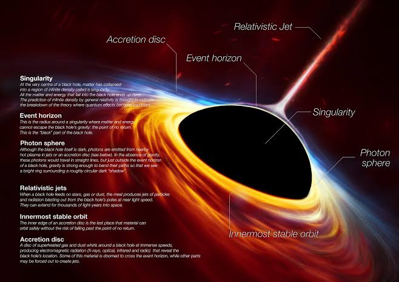
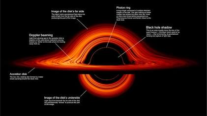
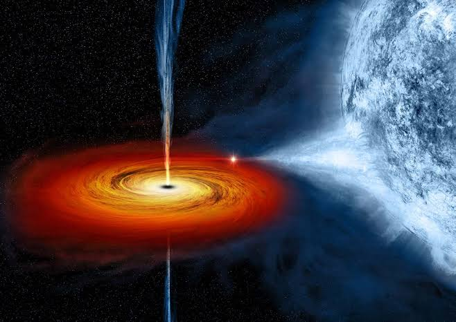
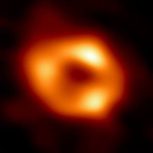
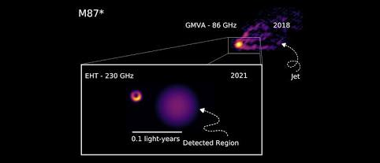
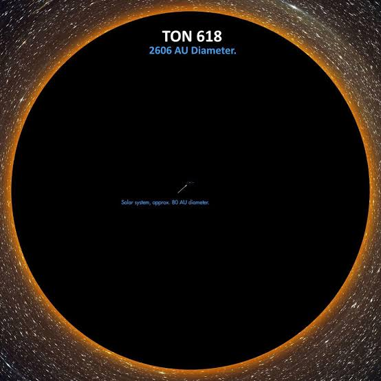
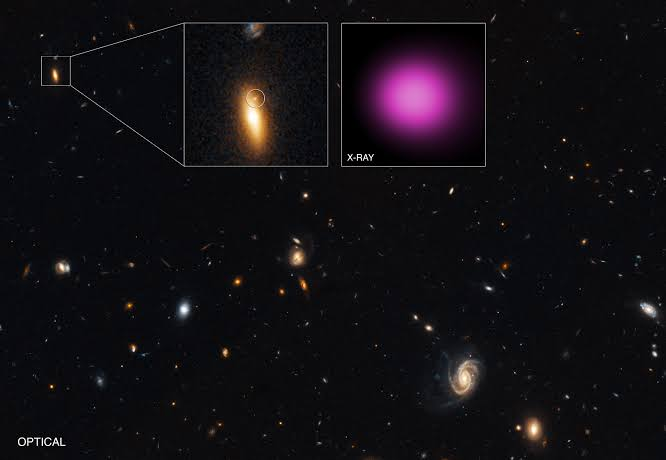

Para comprender la verdadera dimensión del terror que representan los agujeros negros, es fundamental definir primero qué es exactamente uno de estos objetos celestes según las leyes de la física moderna y la relatividad general de Albert Einstein. Un agujero negro es una región del espacio-tiempo en la que la concentración de masa es tan densa y extrema que genera un campo gravitacional de una potencia tal que ninguna partícula material, ni siquiera la luz u otras radiaciones electromagnéticas, puede escapar de su atracción. Este fenómeno se origina cuando una estrella masiva agota todo su combustible nuclear y su núcleo colapsa bajo su propio peso debido a la ausencia de presión térmica hacia afuera, reduciendo su volumen a dimensiones subatómicas y concentrando toda su masa en un punto central de densidad infinita conocido como singularidad. Alrededor de esta singularidad se forma una frontera esférica unidireccional llamada horizonte de sucesos, que marca el punto de no retorno cósmico: cualquier objeto, luz o materia que cruce esta línea queda atrapado para siempre, condenado a precipitarse hacia el centro.

A partir de esta definición fundamental, el comportamiento y los peligros asociados a los agujeros negros adquieren una magnitud aterradora. Lejos de ser meros cuerpos pasivos que flotan en el vacío, los agujeros negros interactúan violentamente con su entorno cósmico a través de mecanismos como los discos de acreción, donde el gas, el polvo y la materia estelar capturada son acelerados a velocidades cercanas a la de la luz antes de cruzar el horizonte de sucesos. Este proceso de fricción extrema calienta la materia a millones de grados kelvin, transformándola en un reactor cósmico que emite torrentes devastadores de rayos X, rayos gamma y radiación ultravioleta de alta intensidad. Asimismo, si un objeto material o un cuerpo celeste se aproxima demasiado a un agujero negro estelar, las fuerzas de marea gravitacionales se vuelven tan intensas que la diferencia de atracción entre el lado más cercano y el más lejano del objeto genera un estiramiento extremo conocido como espaguetización, desintegrando la materia en un flujo subatómico antes de su absorción definitiva.

Dentro de la clasificación astrofísica, los agujeros negros se dividen principalmente en categorías según su masa y origen, comenzando por los agujeros negros de masa estelar que se forman tras la muerte de estrellas masivas. Un ejemplo histórico y exhaustivamente estudiado es Cygnus X-1, un sistema binario situado a unos seis mil años luz de la Tierra en la constelación del Cisne, donde un agujero negro estelar con una masa equivalente a unas veintiuna veces el Sol orbita junto a una estrella supergigante azul, extrayendo constantemente su material y generando emisiones continuas de rayos X que permitieron confirmar la existencia de estos objetos en el universo observable. Otro hito fundamental en la investigación de estos cuerpos ocurrió con la detección directa de ondas gravitacionales realizada por el observatorio LIGO mediante el evento denominado GW150914, el cual consistió en la violenta colisión y fusión de dos agujeros negros estelares con masas de veintinueve y treinta y seis veces la solar, liberando en un instante una cantidad de energía equivalente a tres masas solares convertidas puramente en ondas que alteraron el tejido del espacio-tiempo a lo largo de millones de años luz.

En una escala muy superior se encuentran los agujeros negros supermasivos, colosos con masas que oscilan entre millones y miles de millones de veces la del Sol y que residen de manera invariable en el centro de casi todas las galaxias grandes del universo. En el núcleo de nuestra propia Vía Láctea se encuentra Sagittarius A*, un agujero negro supermasivo con una masa estimada en cuatro millones trescientos mil soles, cuya presencia ha sido verificada mediante el seguimiento riguroso de las órbitas de estrellas cercanas como la estrella S2, que gira alrededor del abismo invisible a velocidades que superan los cinco mil kilómetros por segundo. Aunque Sagittarius A* se encuentra en una fase relativamente tranquila y de baja acreción en la época actual, otros núcleos galácticos albergan monstruos verdaderamente hiperactivos, como el situado en el centro de la galaxia elíptica M87, ubicada a unos cincuenta y cinco millones de años luz en el cúmulo de Virgo. Este agujero negro supermasivo posee una masa de seis mil quinientos millones de soles y fue el primero en ser fotografiado directamente por la Colaboración del Telescopio del Horizonte de Sucesos, destacando por expulsar un chorro colosal de plasma relativista que se extiende a lo largo de cinco mil años luz en el espacio intergaláctico.

Para comprender la verdadera dimensión del terror que representan los agujeros negros, es fundamental definir primero qué es exactamente uno de estos objetos celestes según las leyes de la física moderna y la relatividad general de Albert Einstein. Un agujero negro es una región del espacio-tiempo en la que la concentración de masa es tan densa y extrema que genera un campo gravitacional de una potencia tal que ninguna partícula material, ni siquiera la luz u otras radiaciones electromagnéticas, puede escapar de su atracción. Este fenómeno se origina cuando una estrella masiva agota todo su combustible nuclear y su núcleo colapsa bajo su propio peso debido a la ausencia de presión térmica hacia afuera, reduciendo su volumen a dimensiones subatómicas y concentrando toda su masa en un punto central de densidad infinita conocido como singularidad.

Entre los extremos absolutos de la masa cósmica se encuentra TON 618, un cuásar hiperluminoso alimentado por un agujero negro ultramasivo cuya masa supera los sesenta y seis mil millones de veces la del Sol, convirtiéndolo en uno de los objetos más pesados conocidos en todo el cosmos. Para dimensionar la escala aterradora de TON 618, el diámetro de su horizonte de sucesos abarca cientos de miles de millones de kilómetros, superando ampliamente el tamaño de todo el sistema solar y extendiéndose mucho más allá de la órbita de Plutón, lo que demuestra cómo estos abismos gravitacionales dominan por completo la estructura y el destino de las galaxias que los albergan.

Finalmente, a este panorama de destrucción potencial se suma la existencia de los agujeros negros errantes o solitarios, millones de cadáveres estelares oscuros que vagan sin rumbo fijo a través del medio interestelar de la Vía Láctea sin estar ligados a ningún sistema estelar. Debido a su naturaleza intrínsecamente invisible y a la ausencia de luz propia, estos nómadas cósmicos solo pueden detectarse mediante efectos muy sutiles de microlente gravitacional cuando cruzan frente a una estrella distante. Un encuentro fortuito entre uno de estos agujeros negros errantes y nuestro sistema solar, aunque estadísticamente improbable debido a las enormes distancias del espacio interestelar, tendría consecuencias catastróficas para la estabilidad planetaria, ya que alteraría de inmediato las órbitas de los planetas gigantes y desencadenaría un bombardeo masivo de cometas hacia los mundos interiores.
